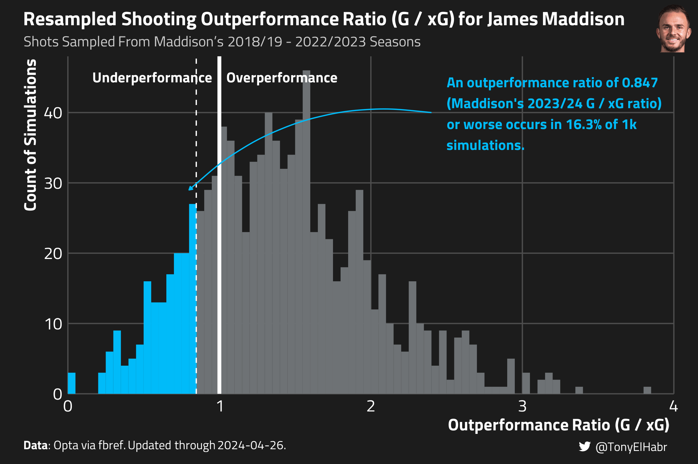

Quantifying how unlikely a player’s season-long shooting performance was
Published
May 4, 2024
Introduction
Towards the end of each soccer season, we naturally start to look back at player performances, often looking to seems to have improved the most compared to their past seasons. Or, on the other end of the spectrum, who disappointed the most. We may have different motivations for doing so–e.g. we may be trying to attribute team over- and under-performance to individuals, we may be hypothesizing who is likely to be transferred or resigned, etc.
The question “How unexpected (or”unlikely”) was player X’s shooting performance this season?” is often posed when observing a large difference in a player’s goals scored and expected goals (xG). For instance, if a striker only scored 8 goals in a given season on 12 xG, their “underperformance” of 4 goals is certainly notable, as its about 50% lower than expected (i.e. (8 - 12) / 12).
The “Outperformance” (\(O_p\)) ratio–the ratio of a player \(p\)’s (non-penalty) goals \(G_p\) to expected goals \(xG_p\)–is perhaps the most common way of evaluating a player’s shooting performance.1
\[
O_p = \frac{G_p}{xG_p}
\tag{1}\]
Intuitively, an \(O_p\) ratio of 1 indicates that a player is scoring as many goals as expected; a ratio greater than 1 indicates underperformance; and a ratio less than 1 indicates overperformance. Our hypothetical player underperformed with an \(O_p\) ratio of 0.67 (i.e. \(O_p = \frac{8}{12} = 0.75\)).
In most cases, we have prior seasons of data to use when evaluating a player’s \(O_p\) ratio for a given season. For example, let’s say our hypothetical player scored 12 goals on 10 xG (\(O_p = 1.2\)) in the season prior, and 11 goals on 10 xG (\(O_p = 1.1\)) before that. Putting things in perspective, an \(O_p = 0.75\) after those performances seems unlikely, especially compared to an “average” player who theoretically achieves \(O = 1\) ratio every year.
So how do we put a number on the unlikeliness of that \(O = 0.75\) for our hypothetical player, accounting for their prior season-long performances?
Data
For this post, I’ll be using public data from FBref for the 2018/19 - 2023/24 seasons of the the Big 5 European soccer leagues. Fake data is nice for examples, but ultimately we want to test our methods on real data. Our intuition about the results can be a useful caliber of the sensibility of our results.
We’ll focus on one player in particular–James Maddison and Matheus Cunha. Maddison has had a sub-par 2023/2024 season for his own standards, underperforming his xG for the first time in since he started playing in the Premier League in 2018/19. On the other hand, Cunha–who has bounced around teams across the Bundesliga, La Liga, and most recently the Premier League–has overperformed his xG for the first time this season.
Analysis
Approach 0: \(t\)-test
If you have some background in statistics, perhaps the first approach that comes to mind is a \(t\)-test (using shot-weighted averages and standard deviations).
Approach 0
TARGET_SEASON_END_YEAR <-2024select_t_test <- select_np_season_shooting |> dplyr::filter(season_end_year < TARGET_SEASON_END_YEAR) |> dplyr::summarise(.by =c(player_id, player),mean =weighted.mean(o, w = shots),## could also use a function like Hmisc::wtd.var for weighted variancesd =sqrt(sum(shots * (o -weighted.mean(o, w = shots))^2) /sum(shots)) ) |> dplyr::inner_join( select_np_season_shooting |> dplyr::filter(season_end_year == TARGET_SEASON_END_YEAR) |> dplyr::select(player_id, target_o = o),by = dplyr::join_by(player_id) ) |> dplyr::mutate(z_score = (target_o - mean) / sd,p_value =2*pnorm(-abs(z_score)) ) |> dplyr::arrange(player)
Output from Approach 0
select_t_test#> # A tibble: 2 × 7#> player_id player mean sd target_o z_score p_value#> <chr> <chr> <dbl> <dbl> <dbl> <dbl> <dbl>#> 1 ee38d9c5 James Maddison 1.40 0.378 0.847 -1.47 0.141 #> 2 dc62b55d Matheus Cunha 0.757 0.182 1.16 2.24 0.0250
In reality, this isn’t giving us a percentage of likelihood of the outcome. Rather, the p-value measures the probability of obtaining an outperformance as extreme as the one observed in 2023/24 (or more extreme) if the null hypothesis is true. The null hypothesis in this case would be that there is no significant difference between the player’s actual outperformance ratio in the 2023/24 “target” season and the distribution of outperformance ratios observed in previous seasons.
The t-test indicates that Cunha’s goals-to-xG ratio this year violates the null hypothesis, suggesting that this season has been significantly remarkable for him. On the other hand, the t-test indicates that there is not sufficient evidence that Maddison’s \(O_p\) this season is significantly worse than his \(O_p\) in prior seasons.
Approach 1: Resampling from Prior History of Shots
We’re not going to get very far just using a traditional approach, nor just by looking at the player-season level. We need to dive into shot-level data to more robustly understand uncertainty.
Here’s a more sophisticated approach to quantifying the unlikeliness of a “target” season’s \(G / xG\) ratio:
Sample \(N_{p,\text{target}}\) shots (with replacement2) from a player’s past shots \(S_{p,\text{target}'}\). Repeat this for \(R\) resamples.3
Then, to quantify unlikeliness of an underperforming season, count the number of resamples \(r^-\) in which the outperformance ratio \(\hat{O}_{p,\text{target}'}\) of the sampled shots is less than or equal to the observed \(O_{p,\text{target}}\) ratio in the target season for the player.4 The proportion \(\Pi^- = \frac{r^-}{R}\) represents the unlikeness of a given player’s observed \(O_{p,\text{target}}\) in the target season.
select_resampled_props#> # A tibble: 2 × 5#> player_id player prior_o target_o prop_lte#> <chr> <chr> <dbl> <dbl> <dbl>#> 1 ee38d9c5 James Maddison 1.38 0.847 0.163#> 2 dc62b55d Matheus Cunha 0.772 1.16 0.898
These results imply that Maddison’s 2023/24 \(G / xG\) ratio of 0.847 (or worse) occurs in 16.3% of simulations (prop_lte), and that Cunha’s 2023/24 \(O\) ratio of 1.16 (or better) occurs in 10.3% of simulations (1 - prop_lte).5 Honestly, these numbers feel fairly reasonable, but perhaps a bit too opinionated.
This approach is fairly simplistic and elegant–we just sample shots from a player’s history and count up the outcomes with respect to a target threshold. The plot below should provide a bit of visual intuition as to what’s going on.

Discussion
So is this good enough? Maybe. There are some caveats I can think of:
We’re implicitly making an assumption that a player’s past shot profile is representative of their future shot profile.
We’re effectively treating each player’s \(G / xG\) ratio as constant and only trying to understand the uncertainty around it.
These things don’t necessarily mean that this methodology is bad–it just has its caveats. On the other hand, one notable advantage of this approach is that it is “non-parametric”–we don’t assume anything about the underlying distribution of a player’s \(O_p\); we simply let the power of resampling shape the distribution of outcomes, which should look different for a striker that only takes shots near the goal and a defender that only launches shots from outside the box.
Calibration
One way to check on the robustness of this approach is to see what the distribution of unlikeness \(\Pi^-\) looks like across all players \(P\). We should expect a distribution that looks relatively uniform–in other words, about 10% of players should have a 90th percentile unlikely outcomes (i.e. very likely), 10% of players should have a 10th percentile unlikely outcome (i.e. very unlikely), and so on.
HISTOGRAM HERE
Indeed, the histogram below follows a fairly uniform distribution, with a bit of irregularity at the very edges.
Haaland’s peculiar season has been noted among fans and the media, and it’s interesting to see that this methodology has put the odds of such an outcome at just 0.4%. Perhaps that’s right, but I honestly think that’s just a little too extreme.
Let’s see if we can improve on things with another approach.
Approach 2: Sampling from a Gamma Distribution
If we assume that \(O_p\) ratios come from a Gamma data-generating process, then we can leverage the properties of a player-level Gamma distribution to assess the unlikelihood of an observed \(O_p\) ratio. Specifically, this approach allows us to determine the probability that a player’s \(O_p\) ratio falls at or below a certain quantile of the distribution, providing a robust metric for evaluating player performance against expected outcomes.
For estimating the unlikeliness of observed outcomes for the 2023/24 “target” season, we proceed in the following manner:
Estimate a Player-Specific Gamma Distribution: Estimate a Gamma distribution \(\Gamma_{p,\text{target}'}\) to model a player’s true outperformance ratio \(O_{p}\) across all shots, excluding those in the target season–\(\hat{O}_{p,\text{target}'}\).
Assess the Probability of the Target Season’s Outcome: Calculate the probability that \(\hat{O}_{p,\text{target}'}\) is less than or equal to the player’s observed \(O_{p,\text{target}}\) in the target season.
The code that follows shares similarities to my prior analysis on Empirical Bayes (EB) shrinkage of \(O_p\). However, a key difference is that we now estimate the parameters of the prior distribution separately for each player, tailoring the analysis to individual performance variations. Further, we don’t focus on any posterior distribution, although we could here if we wanted to answer the question: “What is the likelihood of a player achieving their 2023/24 \(G / xG\) ratio again (in a future season)?”
Approach 2
## Similar to my code in /posts/xg-empirical-bayesN_SIMS <-10000## We need to choose "bounds" sometimes to help MASS::fidistr estimate parameter values.## In practice, I found that MASS::fidistr + dgamma needed a vector of length 5## before `lower` and `upper` need not be specified. But we can't gaurantee that we'll## always have a vector of at least 5 values to pass to it, so we must guide it## by intelligently choosing lower and upper bounds.## At 500 shots, we feel like we can set pretty strong lower and upper bounds## for the prior parameters to estimate. Around 50 shots is when we feel like we can## start moving up our bounds from (1, 1)choose_prior_bound <-function(x, to, from =c(50, 500)) { dplyr::case_when( x < from[1] ~ to[1], x >= from[2] ~ to[2],TRUE~ scales::rescale(x, from = from, to = to) )}choose_prior_lower_bound <-function(x) {choose_prior_bound(x = x,to =c(1, 25) )}choose_prior_upper_bound <-function(x) {choose_prior_bound(x = x,to =c(10, 50) )}## By default:## 1. `lower`: Don't return values less than 1 (too weak of a prior)## 2. `upper`: Dont' return values greater than 25 (too strong of a prior)estimate_gamma_prior_distr_params <-function(x, lower =1, upper =25) { prior_distr <- MASS::fitdistr( x +1e-6, ## fudge factor to prevent 0s, dgamma,start =list(shape =1, rate =1),lower = lower,upper = upper )list(shape =unname(prior_distr$estimate[1]),rate =unname(prior_distr$estimate[2]) )}estimate_gamma_distributed_o <-function( shots, players, target_season_end_year) { select_gamma_o <- purrr::imap_dfr( players, \(.player, .player_id) { player_np_shots <- shots |> dplyr::filter(player_id == .player_id) |> dplyr::mutate(is_target = season_end_year == target_season_end_year) prior_player_np_shots <- player_np_shots |> dplyr::filter(!is_target) target_player_np_shots <- player_np_shots |> dplyr::filter(is_target) n_prior_shots <-nrow(prior_player_np_shots) n_prior_seasons <-length(unique(prior_player_np_shots))## For the purpose of estimating a prior, keep the number of non-target seasons## fixed and spread the non-target season shots evently across those seasons.## This is to help with choosing a set of Gamma distribution parameters.## An alternative approach might be to split the player's non-target season shots## into equally sized intervals (`fold`) that are approximately equal to (but usually## smaller than) their target season shot volume. Assuming a player tends to## shoot a similar number of shots per season, the number of `folds` will equal## the number of seasons in which they appear in the data set, and this process## would simply be splitting their shots evenly across those seasons.## However, this approach requires "peeking" at the target season data, relying## on the number of target season shots being known. n_folds <- (n_prior_shots %/% n_prior_seasons) + 1L shots_in_each_fold <- n_prior_shots %/% n_folds numbered_player_np_shots <- prior_player_np_shots |> dplyr::arrange(match_date, minute) |> dplyr::mutate(rn = dplyr::row_number(),fold = 1L + ((rn - 1L) %/% shots_in_each_fold),## add any leftover to the last foldfold =ifelse(fold > n_folds, n_folds, fold) ) prior_distr_shots <- numbered_player_np_shots |> dplyr::summarize(.by =c(fold),shots = dplyr::n(), dplyr::across(c(g, xg), \(.x) sum(.x)) ) |> dplyr::mutate(o = g / xg) agg_player_np_shots <- player_np_shots |> dplyr::summarize(.by =c(is_target),shots = dplyr::n(), dplyr::across(c(g, xg), \(.x) sum(.x)) ) |> dplyr::mutate(o = g / xg) agg_prior_player_np_shots <- agg_player_np_shots |> dplyr::filter(!is_target) agg_target_player_np_shots <- agg_player_np_shots |> dplyr::filter(is_target) params <-estimate_gamma_prior_distr_params( prior_distr_shots$o,lower =choose_prior_lower_bound(agg_prior_player_np_shots$shots),upper =choose_prior_upper_bound(agg_prior_player_np_shots$shots) )list('player_id'= .player_id,'player'= .player,'params'=list(params) ) } )}select_gamma_o <- np_shots |>estimate_gamma_distributed_o(players = SELECT_PLAYERS,target_season_end_year = TARGET_SEASON_END_YEAR ) |> dplyr::inner_join( wide_player_np_shots |> dplyr::select( player_id, prior_o, target_o ),by = dplyr::join_by(player_id) ) |> dplyr::arrange(player, player_id)select_gamma_props <- select_gamma_o |> dplyr::mutate(prop_lte = purrr::map2_dbl( target_o, params, \(.target_o, .params) {pgamma( .target_o, shape = .params$shape, rate = .params$rate,lower.tail =TRUE ) } ) )
Output from Approach 2
select_gamma_props |> dplyr::select(player, prior_o, target_o, prop_lte)#> # A tibble: 2 × 4#> player prior_o target_o prop_lte#> <chr> <dbl> <dbl> <dbl>#> 1 James Maddison 1.38 0.847 0.267#> 2 Matheus Cunha 0.772 1.16 0.845
We see that Maddison’s 2023/24 \(G / xG\) ratio of 0.847 (or worse) was about 26.7% unlikely given his prior shot history (prior_prop_lte). Using the same line of reasoning, we can say that Cunha’s 2023/24 \(O\) ratio of 1.16 was a 15.5% percentile outcome (1 - prior_prop_lte), so an outcome expected for him once every 6 to 7 seasons.
To gain some intuition around this approach, we can plot out the Gamma distributed estimate of Maddison’s \(O_p\). The result is a histogram that looks not all that dissimilar to the one from before with resampled shots, just much smoother (since this is a “parametric” approach).
MADDISON PLOT HERE
Calibration
Conclusion
Footnotes
The raw difference between goals and xG is another reasonable measure of shooting performance, but it can “hide” shot volume. Is it fair to compare a player who take 100 shots in a year and scores 12 goals on 10 xG with a player who takes 10 shots and scores 3 goals on 1 xG? The raw difference is +2 in both cases, indicating no difference in the shooting performance for the two players. But \(O\) would be 1.2 and 3 respectively, hinting at the former player’s small sample size (since no one can reasonably expect to sustain an \(O\) greater than 1.5 or 2 over many shots).↩︎
One could argue that without replacement is also reasonable. However, some players wouldn’t have enough shots from prior seasons to match their volume of shots in 2023/24.↩︎
(Change nothing about the shot’s xG and goal outcomes.) \(N_p\) should be set equal to the number of shots a player has taken in the target season, i.e. 2023/24 here. \(M\) should be set to some fairly large number, so as to achieve stability in the results.↩︎
Similarly, to estimate the unlikeness of an overperforming season, count up in how many simulations \(r^+\) the outperformance ratio of the resampled shots is greater than \(O_{p,\text{target}}\) and calculate the proportion \(\Pi^+ = \frac{r^+}{r}\).↩︎
Put more in layman’s terms, we might expect Maddison to have a season-long \(O\) ratio like his 2023/24 ratio in 1 of every 6 seasons. Likewise, Cunha’s 2023/24 outcome is a 1 in 10 season occurrence, given his shot history.↩︎